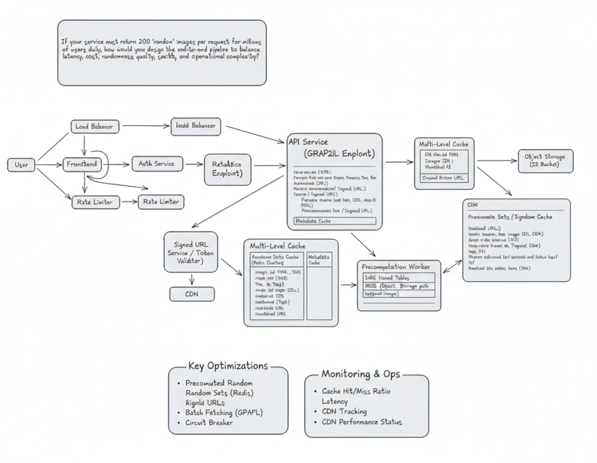

Image Share System (200 Images)
Yes, please redesign the pipeline diagram to reflect the "1% industry" approach with all optimizations, clearly showing the caching, precomputing, and security flows. Also, provide a detailed system design document for this updated architecture.
Here's the updated diagram reflecting the "1% industry" approach:

I've redesigned the diagram and prepared a comprehensive system design document based on the "1% industry" approach.
System Design Document: Scalable Image Service with Precomputed Randomization
1. Introduction
This document outlines the design of a highly scalable and performant image service capable of returning 200 "random" images per request to millions of daily users. The design prioritizes low latency, cost-effectiveness, high randomness quality, robust security, and manageable operational complexity. It leverages industry best practices including multi-level caching, precomputation, and secure content delivery.
2. Goals & Requirements
- Latency: Sub-100ms response time for image requests.
- Cost: Minimize infrastructure costs while meeting performance targets.
- Randomness Quality: Provide a diverse and truly random selection of images per request.
- Security: Protect image assets and user data; prevent unauthorized access and abuse.
- Operational Complexity: Maintain a system that is easy to monitor, maintain, and scale.
- Scale: Support millions of users and billions of image requests daily.
- Reliability: High availability and fault tolerance.
3. Architecture Overview
The system employs a multi-tiered architecture with a strong emphasis on caching and precomputation to offload real-time database lookups and expensive random selections. Signed URLs ensure secure and efficient content delivery via CDN.

4. Component Breakdown
4.1. User Interface & Edge
- User: Initiates requests from client devices (web, mobile).
- Load Balancer (Edge): Distributes incoming traffic across Frontend instances. Provides DDoS protection and SSL termination.
4.2. Request Processing & Security
- Frontend (API Gateway / BFF):
- Acts as the entry point for user requests.
- Responsible for initial request validation and routing.
- Can perform lightweight pre-processing or aggregation.
- Rate Limiter:
- Protects backend services from abuse and ensures fair usage.
- Applies limits per user, IP address, or API key.
- Implemented using distributed caches like Redis.
- Auth Service:
- Authenticates and authorizes user requests.
- Validates user tokens (e.g., JWT).
- Communicates with User Database (via RDS) for user information.
- Enforces access control policies.
4.3. API Service (GraphQL Endpoint)
- This is the core business logic layer.
- GraphQL Endpoint:
- Provides a flexible API for clients to request specific image metadata.
- Handles batch fetching and avoids N+1 query problems.
- Fetches image metadata (ID, title, tags, thumbnail URL, signed URL) from the Multi-Level Cache or, as a fallback, from the RDS.
- Generates or retrieves Signed URLs for direct image access from the CDN.
- Applies a Circuit Breaker pattern to protect against cascading failures of downstream services (e.g., Cache, RDS).
4.4. Multi-Level Caching Strategy
Caching is paramount for low latency and reduced database load.
- Redis/Memcached (Primary Cache for Precomputed Sets):
- Stores precomputed lists of 200 image IDs and their associated metadata (including pre-generated Signed URLs).
- Key: a combination of "random set ID" or a time-based key.
- Value: A JSON array of image objects.
- TTL (Time-To-Live): Configured to ensure freshness while avoiding frequent regeneration. A short TTL (e.g., 5-10 minutes) for random sets helps maintain randomness quality over time.
- Metadata Cache (Redis/Memcached):
- Caches individual image metadata (ID, title, tags, base S3 URL, current Signed URL).
- Reduces load on the database for frequently requested individual image details.
- TTL can be longer here, as individual image metadata changes less frequently.
- CDN (Content Delivery Network):
- Serves the actual image files.
- Caches images at edge locations globally, drastically reducing latency for users.
- Leverages Signed URLs to ensure only authorized requests can access content directly from S3 via the CDN.
4.5. Data Storage
- Object Storage (S3):
- Stores the raw, high-resolution image files.
- Highly scalable, durable, and cost-effective.
- Access is secured via IAM policies and Signed URLs.
- RDS (Relational Database Service):
- Stores image metadata:
Image ID(Primary Key)TitleDescriptionTags(indexed for search/filtering, if needed)S3_Path(path to the image in object storage)Upload_TimestampStatus(e.g., active, moderated, etc.)
- Stores user information and authentication data.
- Optimized with indexes to support efficient queries for the Precomputation Worker.
- Stores image metadata:
4.6. Precomputation Worker
- Offline Process: This dedicated service runs continuously or on a schedule.
- Function:
- Queries the RDS for a large pool of image IDs and their metadata (e.g.,
S3_Path). - Generates truly random combinations of 200 image IDs.
- For each image ID in the random set, it generates a Signed URL for direct CDN access (with an appropriate expiration time).
- Stores these complete JSON objects (containing 200 image details with their Signed URLs) into the Precomputed Sets Cache (Redis).
- Periodically refreshes these random sets based on TTLs or a scheduled job.
- Queries the RDS for a large pool of image IDs and their metadata (e.g.,
- Benefits:
- Ensures high randomness quality.
- Moves expensive random selection logic off the critical request path.
- Pre-generates Signed URLs, eliminating real-time cryptographic operations during user requests.
4.7. Signed URL Service / Token Validator
- This internal service is responsible for generating and validating Signed URLs.
- It interacts with AWS S3/CloudFront to create time-limited, access-controlled URLs for accessing content via the CDN.
- The Precomputation Worker and the API Service (for cache misses or specific requests) use this service.
5. Data Flow for a "Get 200 Random Images" Request
- User Request: User's device sends a request to the Frontend via the Edge Load Balancer.
- Rate Limiting: The request passes through the Rate Limiter.
- Authentication: Frontend forwards the request to the Auth Service to validate the user's token.
- API Service: If authenticated, the request reaches the API Service (GraphQL Endpoint).
- Cache Check (Precomputed Sets):
- The API Service first attempts to retrieve a precomputed random set from the Redis Precomputed Sets Cache.
- It uses a key (e.g., a simple counter that rotates, or a time-based key) to fetch one of the available random sets.
- Cache Hit: If a set is found in the cache (containing 200 image metadata objects with valid Signed URLs), the API Service immediately returns this JSON array to the Frontend.
- Cache Miss (Fallback - Rare for Random Sets):
- If a precomputed set is not found (e.g., cache expired, worker failed), the API Service would fall back.
- It would query the RDS for a pool of image IDs, perform a real-time random selection, generate Signed URLs via the Signed URL Service, store this new set in cache, and then return it. This scenario is designed to be rare.
- Frontend Response: The Frontend receives the image data from the API Service and sends it back to the user.
- Image Loading (Client Side): The user's client-side application receives the JSON array of image metadata (including Signed URLs). It then directly fetches the images from the CDN using these Signed URLs.
- CDN Delivery: The CDN serves the image files from its edge caches. If an image is not in the CDN cache, it fetches it from S3.
6. Key Optimizations & "1% Industry Thinking"
- Precomputed Random Sets: The most significant optimization. By generating random lists of images (with pre-signed URLs) offline and storing them in a fast cache (Redis), the system avoids real-time heavy computation and database lookups during user requests. This guarantees low latency at scale for random selection.
- Signed URLs: Essential for security and efficiency. They provide temporary, authorized access to images directly from the CDN/S3, offloading the API service from acting as an image proxy. This also allows granular control over access and expiration.
- Multi-Level Caching: CDN for static assets, Redis for precomputed lists and metadata. This tiered approach maximizes cache hit ratios and minimizes latency.
- Separation of Concerns: Image metadata in RDS, actual images in S3. This allows independent scaling and optimization of database and storage.
- GraphQL for Metadata: Provides flexibility and efficiency in fetching precisely what the client needs, avoiding over-fetching. Batching capabilities reduce network calls.
- Offline Processes: The Precomputation Worker ensures expensive tasks are done asynchronously, not on the critical path of user requests.
- Rate Limiting & Authentication: Robust security measures prevent abuse and ensure only authorized users access content.
- Circuit Breakers: Enhance system resilience by gracefully handling failures in downstream services, preventing cascading outages.
7. Monitoring & Operations
- Cache Hit/Miss Ratio: Critical metric for caching effectiveness.
- Latency: End-to-end latency, per-service latency (Auth, API, Cache).
- CDN Performance: Latency, error rates, cache hit ratio at the CDN level.
- Database Load: CPU, I/O, connection count for RDS.
- Worker Status: Health and completion rates of the Precomputation Worker.
- Error Rates: Across all services (API, Auth, etc.).
- Alerting: Proactive alerts for performance degradation, errors, and security events.
- Distributed Tracing: To understand the flow of requests and pinpoint bottlenecks.
8. Future Enhancements
- Personalized Randomness: Incorporate user preferences or content categories into the precomputation logic.
- Image Moderation Pipeline: Integrate an automated and/or manual moderation system to ensure content quality and safety.
- Advanced Search & Filtering: If required, enhance RDS with more sophisticated indexing (e.g., Elasticsearch) for complex search queries beyond random selection.
- Dynamic Image Resizing/Optimization: Services like AWS Lambda@Edge or dedicated image processing services to serve optimized image sizes on the fly.
- A/B Testing Framework: For experimenting with different randomization algorithms or features.